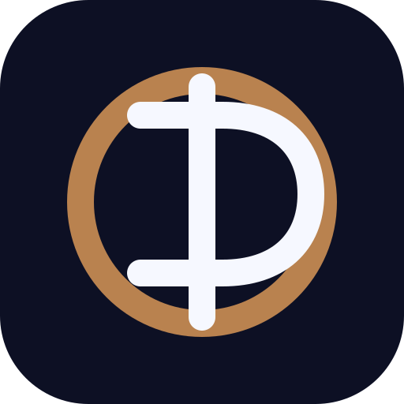

場景素材配置
0 / 0將每個腳本場景指派合適素材

輸入品牌資訊，AI 將為您生成高轉換影片。
點擊建議即可套用到標語欄位，或自行編輯。
素材僅用於本次專案，絕不對外公開。
搜尋 YouTube Shorts 候選並比較抽象結構。只分析 Hook、節奏、痛點、證據與 CTA，不複製人物、品牌、音樂、素材或原片文字。TikTok 可使用自備連結；受平台限制的來源會清楚標示狀態。
上傳你想複刻的爆款(手機螢幕錄影即可)。檔案 <18MB 最穩;過大請縮短錄影或降畫質。也可直接貼 YouTube 連結。
素材準備
將每個腳本場景指派合適素材
Canvas Timeline
LOW-RES REVIEW
(生成腳本後出現)
通過後全自動生成,中途不需點擊。單鏡失敗會跳過並在結束時回報,不自動重試。
聲線由腳本引擎依內容自動挑選；語音服務未啟用時自動改用瀏覽器內建語音。
FINAL DELIVERY · SAFE MOCK
本頁使用本機測試流程產生的可播放 MP4；正式生成仍安全鎖定。
展示資料，不會產生扣款。正式交付、校稿與加購紀錄以伺服器為準。